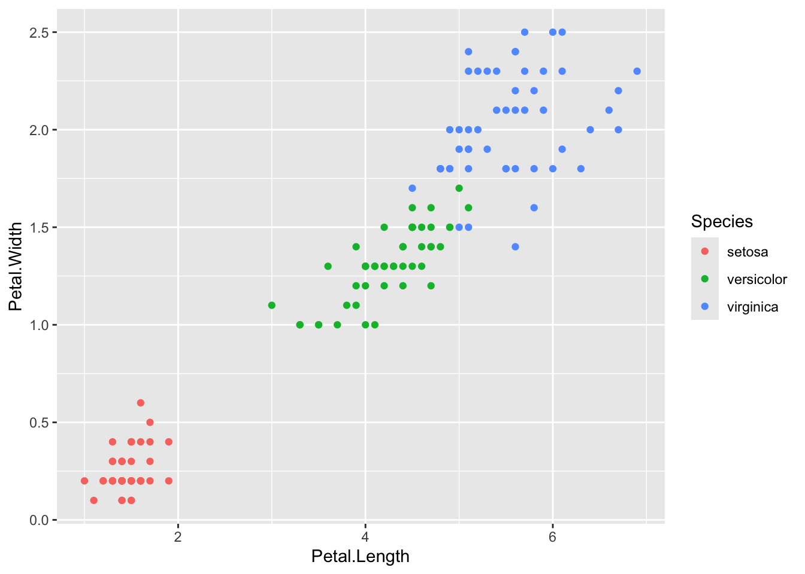
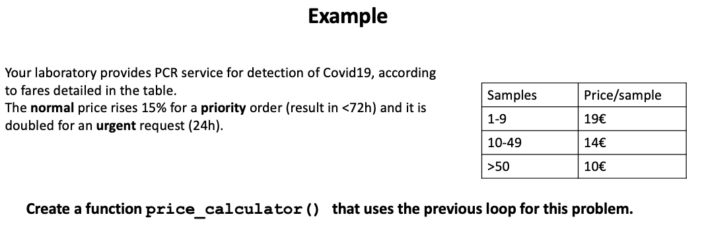

# install the package
install.packages("xlsx", repos = "https://cran.rstudio.com/")
# CRAN is the repository by default but it can be
# optionally indicatedR4: Functions in R
Packages
CRAN
Funtions
Arguments
Checkpoints
Warning
Error
1 R packages
As you already know, R is a ‘GNU Software’ with a GPL license. As a a freely available language it has a great community of users from diverse background and interests. This community has developed a myriad of applications for R, called R Packages. The idea behind R packages is that the chances are that someone has already solved a problem that you’re working on, and you can benefit from their work by downloading their package.
Important
Packages are the basic units of reproducible R code. They contain reusable R functions, the documentation that describes how to use them (help), and some sample data to run tests.
With RStudio you can create your own packages to automate very frequent analyses: https://support.posit.co/hc/en-us/articles/200486488-Developing-Packages-with-the-RStudio-IDE
Packages can be installed from one of the public R repositories. In this course we will mainly use two R repos, CRAN and Bioconductor. CRAN stands for “the Comprehensive R Archive Network”, and contains a large selection of packages that can be used free of charge. You can find a complete list of CRAN packages here and a list sorted by topic here.
As we will see in more detail later in the Lesson R9, Bioconductor is a repository of software for bioinformatics or computational biology applications. As of August 2024, the CRAN package repository contains 21,127 packages, while Bioconductor version 3.19 contains 2,300 packages.
R packages in CRAN and Bioconductor are reviewed, although they may stop working after R updates. Also, you can often find new (unverified) packages on GitHub, GitLab, Bitbucket or in other repositories. You can install these non-guaranteed packages with the devtools package (on your own responsability).
1.1 Installing and use R packages
As an example, we are going to install and use xlsx, a handy package to import/export tables in MS Excel format. You may also check related packages, such as readxl or pzfx.
Package requirements
Some R packages may have additional requirements. This is something that is not very common and is outside of R or RStudio, as it depends on how the package was developed. Therefore, there is no general rule or recommendation here.
After testing with students in class, I realized that the xlsx package requires the path of your Java executable. There are a few ways you could fix it, but my suggestion would be to use a package that does not have depend on Java. Now that you know how to install and load packages, you can also try other packages for reading and writing XLS files, such as openxlsx or readxl.
You must load the package before using it.
# two ways of loading the packages:
# 1
library(xlsx)
# 2
require(xlsx)
# help
help(xlsx)
# you can also write in the console ??xlsx
# you can use an if statement to install package only if
# not installed
if (!require(xlsx)) {
install.packages("xlsx")
library(xlsx)
}
# unload the package (optionally)
detach("package:xlsx", unload = TRUE)Optionally, if you want to unload a package from memory, you can use detach(). This can be useful for long scripts.
In the above code we have used require() and library() functions to call for package loading. These are very similar functions that are often interchangeable. The main difference is that when you use require() and it cannot be executed, you will get a warning (see below for how to use warning), but not an error. Therefore, your code will always continue to execute if possible. In the following example, we tried to load an unknown package called uam.
library(uam)Error in library(uam): there is no package called 'uam'require(uam)Loading required package: uamWarning in library(package, lib.loc = lib.loc, character.only = TRUE,
logical.return = TRUE, : there is no package called 'uam'In the next example, we are going to read the file coli_genomes_renamed.csv, that we used in the lesson R3 and export it ready for MS Excel using the package xlsx.
Cross-lesson tip
# open it again
coli_genomes <- read.csv(file = "data/coli_genomes_renamed.csv")
# save
library(xlsx)
write.xlsx(coli_genomes, "data/coli_genomes.xlsx")Many packages in CRAN also contain a reference manual and some of them also a vignette. A vignette is practical guide to each package. You can see all the installed vignettes with browseVignettes() or just vignette() for the primary vignette. You can find a bunch of tutorials and tricks about how to use popular packages, but the vignette is an official and complete reference that is always helpful.
browseVignettes("xlsx")starting httpd help server ... donebrowseVignettes("seqinr")No vignettes found by browseVignettes("seqinr")browseVignettes("ggplot2")Note that in some cases, as in the package seqinr, there is no official vignette at CRAN. However, as R is an open access language, you will easily find information about any package or function in other websites, such as rdrr.io, rdocumentation.org or stackoverflow.com, among others.
1.2 Too many packages
As there are a lot of packages sometimes it takes some time to test different packages for the same analysis. Also, some packages become obsolete with a new R or RStudio version. Thus, is also a good habit to uninstall packages, with the function remove.packages().
Sometimes, you can come into two different namesake functions from independent packages. Also, to reduce the memory load you may want to use a function without loading the package. In those cases, as in the examples below, there is a trick to call a specific function, the prefix package::. However, it should be noted that in some packages the syntax is complex and you need to call more than one function to actually use a major function.
# package getwiki
install.packages("getwiki")Error in contrib.url(repos, "source"): trying to use CRAN without setting a mirrorvignette("getwiki")
DNA <- getwiki::search_wiki("DNA")
str(DNA)'data.frame': 20 obs. of 2 variables:
$ titles : chr "A-DNA" "Circular DNA" "DNA" "DNA (disambiguation)" ...
$ content: chr "A-DNA is one of the possible double helical structures which DNA can adopt. A-DNA is thought to be one of three"| __truncated__ "Circular DNA is DNA that forms a closed loop and has no ends. Examples include:Plasmids, mobile genetic elemen"| __truncated__ "Deoxyribonucleic acid ( ; DNA) is a polymer composed of two polynucleotide chains that coil around each other t"| __truncated__ "DNA (deoxyribonucleic acid) is a molecule encoding the genetic instructions for life.DNA may also refer to:" ...DNA$titles [1] "A-DNA" "Circular DNA" "DNA"
[4] "DNA (disambiguation)" "DNA Oyj" "DNA extraction"
[7] "DNA ligase" "DNA methylation" "DNA methyltransferase"
[10] "DNA polymerase" "DNA profiling" "DNA repair"
[13] "DNA replication" "DNA sequencing" "DNA virus"
[16] "DNA²" "DNA–DNA hybridization" "DnaA"
[19] "Mitochondrial DNA" "Recombinant DNA" In the four examples below, you will see that ggplot() function can be used if you call the package with the prefix ggplot::. However, to make a plot you need several functions and you need to either explicit the prefix for all the required functions (option #3) or load the package, as in #4. Check the Lesson R7 for more info on ggplotting.
# package ggplot2 1: no package load or calling with prefix
ggplot(iris, aes(Petal.Length, Petal.Width, colour = Species)) +
geom_point()Error in ggplot(iris, aes(Petal.Length, Petal.Width, colour = Species)): could not find function "ggplot"# 2: call the package with the prefix at the begining of
# the line
ggplot2::ggplot(iris, aes(Petal.Length, Petal.Width, colour = Species)) +
geom_point()Error in aes(Petal.Length, Petal.Width, colour = Species): could not find function "aes"# 3: prefix in all functions
ggplot2::ggplot(iris, ggplot2::aes(Petal.Length, Petal.Width,
colour = Species)) + ggplot2::geom_point()
# 4: load the package
library(ggplot2)
ggplot(iris, aes(Petal.Length, Petal.Width, colour = Species)) +
geom_point()
Note that in the example we have plotted some data from the dataset named iris. Did you load that data? No need. As we mentioned in the R3 Lesson, R has some built-in datasets that can be used as examples for plots or analysis. You can check all of them using the function data().
1.3 Quick exercise (I)
- Install the package
reportand check its vignette and the info at the package site: https://easystats.github.io/report/
install.packages("report")Error in contrib.url(repos, "source"): trying to use CRAN without setting a mirrorlibrary(report)
# look for the vignette
vignette(report)Error in topic[1L]: object of type 'closure' is not subsettable# no vignette for report! Check also the CRAN site for
# further documentation.- Another R built-in dataset is called DNase and it contains data of several experiments of DNase treatment. Explore data and use the
reportpackage (documentation) to test correlation between the DNase variablesconcanddensity.
report(DNase)The data contains 176 observations of the following 3 variables:
- Run: 11 levels, namely 10 (n = 16, 9.09%), 11 (n = 16, 9.09%), 9 (n = 16,
9.09%), 1 (n = 16, 9.09%), 4 (n = 16, 9.09%), 8 (n = 16, 9.09%), 5 (n = 16,
9.09%), 7 (n = 16, 9.09%), 6 (n = 16, 9.09%), 2 (n = 16, 9.09%) and 3 (n = 16,
9.09%)
- conc: n = 176, Mean = 3.11, SD = 4.06, Median = 1.17, MAD = 1.56, range:
[0.05, 12.50], Skewness = 1.46, Kurtosis = 0.84, 0% missing
- density: n = 176, Mean = 0.72, SD = 0.60, Median = 0.53, MAD = 0.62, range:
[0.01, 2.00], Skewness = 0.58, Kurtosis = -1.07, 0% missingreport(cor.test(DNase$conc, DNase$density))Effect sizes were labelled following Funder's (2019) recommendations.
The Pearson's product-moment correlation between DNase$conc and DNase$density
is positive, statistically significant, and very large (r = 0.93, 95% CI [0.91,
0.95], t(174) = 33.64, p < .001)2 Create user-written functions
2.1 Why? How?
We have discussed throughout the previous lessons how R can help you saving time when you need to analyze and plot the data from your experiment. However, many times, particularly in Bioinformatics, you won’t have the data from one single experiment but from many of them.
Creating you own function will be very useful for automation of repetitive analyses or to encapsulate a sequence of expressions that need to be executed numerous times, perhaps under slightly different conditions. Functions are used in most programming languages as separated instructions for specific tasks.
Breaking out our code into independent functions has several advantages:
When building or maintaining the function, we can focus just on that function: what information it needs, what steps it performs, and what result it provides.
We can simplify the main set of instructions, making it easier to read and maintain over time.
It helps us separate work for a team, assigning each independent function to a member of the team and then just interconnect the functions later on.
And we can more easily reuse the function in multiple places in one script or copy it to reuse in other projects.
In R, functions are also considered as objects. That means that (1) they can be nested, so you can define a function inside another function and (2) you can use functions as arguments to other functions. We will see very useful examples of this latter feature in Lesson R6, using custom functions as arguments for aggregate(), xtabs(), lapply() or sapply().
The overall scheme of an R function is the following:
my_function <- function(argument1, argument2,...){
statements
return(object)
}2.2 My first simple functions
We are going to learn with some examples from a good online tutorial. First, a quite simple function can simply help with calculations:
# my first function
myFunction <- function(x) {
f <- x^2 * 4 + x/3
return(f)
}
# we try it
myFunction(4)[1] 65.33333myFunction(0)[1] 0myFunction(22)[1] 1943.333myFunction(3)[1] 37We can include conditions, loops… Another example can be a function to identify even/odd numbers:
# A simple R function to check whether x is even or odd
evenOdd <- function(x) {
if (x%%2 == 0) {
return("even")
} else {
return("odd")
}
}
# test
evenOdd(4)[1] "even"evenOdd(3)[1] "odd"# sometimes you can omit curly braces
evenOdd2 <- function(x) {
if (x%%2 == 0)
return("even") else return("odd")
}
evenOdd2(4)[1] "even"evenOdd2(3)[1] "odd"evenOdd2(7)[1] "odd"evenOdd2(8)[1] "even"In the above example, we found out that curly braces can be omitted sometimes in if statements or loops (see https://www.learnbyexample.org/r-for-loop/#for-loop-without-curly-braces). This modification makes the code handier, but also riskier, use it carefully. Remember, a great power entails a great responsibility. The same applies to functions. Thus, sometimes when creating an R script, you want to create a small function and use it just once. That happens usually when you want to use your own functions to parse data within an apply family function (see Lesson R6). To deal with those situations, you can use the inline function. To create an inline function you have to use the function command with the argument x and then the expression of the function.
Example:
# inline functions
f <- function(x) x^2 * 4 + x/3
f(4)[1] 65.33333f(0)[1] 0f(22)[1] 1943.3332.3 Quick exercise (II)
We want to write an inline function that transforms concentrations units: milimolar (mM) into micromolar (µM). How would you do it?
Select the right answer2.4 Functions with multiple arguments
Now, we will create a function in R Language that will take multiple inputs and gives us one output.
# A simple R function to calculate area and perimeter of a
# rectangle
area <- function(length, width) {
area = length * width
# you may format the output
print(paste("The area of the rectangle is", length, "x",
width, "=", area, "cm²"))
}
area(2, 3) # call the function[1] "The area of the rectangle is 2 x 3 = 6 cm²"Notice that the output also can be a different type of object, like vector or a list:
# Now we calculate area and perimeter of a rectangle
Rectangle <- function(length, width) {
area = length * width
perimeter = 2 * (length + width)
# create an object called result which is a list of
# area and perimeter
result = list(Area = area, Perimeter = perimeter)
return(result)
}
Rectangle(2, 3)$Area
[1] 6
$Perimeter
[1] 10Like in any R function, you can call the arguments by position or by name. Thus, if add the names of the variables when calling the function you can switch the order of the arguments. Also, you can add some default values when you define the function.
# A simple R code to demonstrate passing arguments to a
# function
Rectangle <- function(length = 5, width = 4) {
area = length * width
return(area)
}
# Case 1:
Rectangle(2, 3)[1] 6# Case 2: If you do not want to follow any order, you can
# include the name of the arguments
Rectangle(width = 8, length = 4)[1] 32# Case 3: default's values
Rectangle()[1] 202.5 Quick exercise (III)
Now, we want a function that help us with the a basic chemistry calculation that you surely have used many times:
\[ C_{1} \cdot V_{1} = C_{2} \cdot V_{2} \]
Write a function named dilution that returns V1, given C1, C2 and V2. Test it with an example in which you have a concentrated solution of NaCl 250 mM (1) and you need to preparate 10 mL of a buffer containing 10 mM NaCl. How much NaCl from your stock do you need?
2.6 Including checkpoints
Now we are going to try a longer code to solve a more complex example.

How many arguments should have this function?
Now let’s see a possible way to do it:
# we need to arguments
price_calculator <- function(samples, category) {
categories <- c(1, 1.15, 2)
names(categories) = c("normal", "priority", "urgent")
if (samples < 10) {
price <- 19 * samples * categories[which(names(categories) ==
category)]
} else if (samples < 50) {
price <- 14 * samples * categories[which(names(categories) ==
category)]
} else if (samples >= 50) {
price <- 10 * samples * categories[which(names(categories) ==
category)]
}
paste("El precio es de", price, "euros.")
}
price_calculator(samples = 10, category = "normal")[1] "El precio es de 140 euros."price_calculator(10, "urgent")[1] "El precio es de 280 euros."price_calculator(10, "urgnt")[1] "El precio es de euros."
Use of Which and Switch
Note that which() gives you a vector with the index or indices of the vector, not the actual values. That’s why we are using categories[] to get the desired subset; in this case, the value of the vector element that fulfills the condition specified by which.
In the following example, we have used a more direct approach. We have simply swapped the strings (“normal”, “priority” and “urgent”) for the numeric values by using the switch() function. You can find more examples of using switch() in this link.
It seems to work, but wrong data inputs are not recognized. How can we introduce checkpoints for the input arguments to prevent unwanted output?
# new version with checkpoints
price_calculator2 <- function(samples, category = "normal" |
"priority" | "urgent") {
category <- switch(category, normal = 1, priority = 1.15,
urgent = 2)
if (samples < 10) {
price <- 19 * samples * category
} else if (samples < 50) {
price <- 14 * samples * category
} else if (samples >= 50) {
price <- 10 * samples * category
}
ifelse(length(price) > 0, return(price), stop("Prioridad incorecta. No se ha podido calcular el precio"))
}
price_calculator2(10, "normal")[1] 140price_calculator2(10, "urgent")[1] 280price_calculator2(10, "urgnt")Error in ifelse(length(price) > 0, return(price), stop("Prioridad incorecta. No se ha podido calcular el precio")): Prioridad incorecta. No se ha podido calcular el precioprice_calculator2(5.3, "normal")[1] 100.7# WTF?We just noticed that the function calculated the price for 5.3 samples, which is nonsense. We should then introduce a new checkpoint for the format of the introduced value for the variable samples.
# alternative with checkpoint for number of samples
price_calculator3 <- function(samples, category = "normal" |
"priority" | "urgent") {
category <- switch(category, normal = 1, priority = 1.15,
urgent = 2)
if (abs(floor(samples)) != samples) {
# check that number of samples is an integer number
stop("Número de muestras incorrecto")
}
if (samples < 10) {
price <- 19 * samples * category
} else if (samples < 50) {
price <- 14 * samples * category
} else if (samples >= 50) {
price <- 10 * samples * category
}
ifelse(length(price) > 0, return(price), stop("Prioridad incorecta. No se ha podido calcular el precio"))
}
# test again
price_calculator3(50, "urgente")Error in ifelse(length(price) > 0, return(price), stop("Prioridad incorecta. No se ha podido calcular el precio")): Prioridad incorecta. No se ha podido calcular el precioprice_calculator3(50, "urgent")[1] 1000price_calculator3(-5, "normal")Error in price_calculator3(-5, "normal"): Número de muestras incorrectoprice_calculator3(5.2, "normal")Error in price_calculator3(5.2, "normal"): Número de muestras incorrecto2.7 Quick exercise (IV)
When creating functions, you can include any R functionality, including reading and parsing external data files. Let’s do a short exercise, within the context of molecular biology.
Can you write a function that convert R into a molecular biology dogma interpreter?
You can use the table genetic_code.csv, located in the data folder that contains the conversion between all the nucleic acid sequence codons and its encoded amino acid in IUPAC one letter code.
Try it out with some examples, including right and wrong codons, like “ATG”, “TAA”, “CAT”, or “AXG”.
# the molecular biology dogma with R
codon2aa <- function(inputCodon) {
code <- read.csv2("data/genetic_code.csv", stringsAsFactors = FALSE)
aa <- code$AA[code$Codon == inputCodon]
return(aa)
}
# now let's try it
codon2aa("ATG")Warning in file(file, "rt"): cannot open file 'data/genetic_code.csv': No such
file or directoryError in file(file, "rt"): cannot open the connectioncodon2aa("TAA")Warning in file(file, "rt"): cannot open file 'data/genetic_code.csv': No such
file or directoryError in file(file, "rt"): cannot open the connectioncodon2aa("CAT")Warning in file(file, "rt"): cannot open file 'data/genetic_code.csv': No such
file or directoryError in file(file, "rt"): cannot open the connectioncodon2aa("AXG")Warning in file(file, "rt"): cannot open file 'data/genetic_code.csv': No such
file or directoryError in file(file, "rt"): cannot open the connectionCan you also check the value of the variable aa ?
#'aa'??
print(aa)Error: object 'aa' not foundWhat just happened? There are a few things worth to comment here:
If the function cannot find the right value to return, the output is empty:
character(0)The variable
aaseems nonexistent! Variables defined in a function are only local variables and cannot be called outside the function.
However, proteins are made up of more than one amino acid, so it’d be great if the input could be a vector of several codons instead a single codon.
Can you add checkpoints and decide how to handle errors?
# version 2
codon2aa_2 <- function(codons) {
aa <- c()
code <- read.csv2("data/genetic_code.csv", stringsAsFactors = FALSE)
for (i in 1:length(codons)) {
# loop over all the elements of the vector 'codons'
stopifnot(`Uno o más de los codones no es correcto. No se ha podido traducir ;)` = codons[i] %in%
code$Codon) #check for correct values
aa[i] <- code$AA[code$Codon == codons[i]]
}
return(aa)
}
# let's try it
codon2aa_2(c("ATG", "TGA"))Warning in file(file, "rt"): cannot open file 'data/genetic_code.csv': No such
file or directoryError in file(file, "rt"): cannot open the connectioncodon2aa_2(c("ARG", "TGA"))Warning in file(file, "rt"): cannot open file 'data/genetic_code.csv': No such
file or directoryError in file(file, "rt"): cannot open the connectioncodon2aa_2(c("ATG", "CAT", "CAT", "AAA", "TAA"))Warning in file(file, "rt"): cannot open file 'data/genetic_code.csv': No such
file or directoryError in file(file, "rt"): cannot open the connectionIn this second example, aa is not a numeric variable (=vector of 1 element), but a “normal vector”, so we need to define it before using in the loop. Also, we have used the function stopifnot() to check for the codons. This function is a shortcut for a standard if{} or ifelse{} to check the codons and a stop if they are not found.
2.8 Quick exercise (V)
Write a function that calculate your approximate age in months.
`?`(as.Date)
`?`(difftime)
# See some examples:
# https://www.geeksforgeeks.org/calculate-time-difference-between-dates-in-r-programming-difftime-function/# quickest way I found
age <- function(x) {
if (!is.na(as.Date(as.character(x), format = "%Y-%m-%d"))) {
age <- as.numeric(Sys.Date() - as.Date(x, format = "%Y-%m-%d")) #result in days
print(paste("You are about", round(age/30, 1), "months old"))
} else {
stop("The input date must be quoted and in format YYYY-MM-DD")
}
}
# test
age(18)Error in age(18): The input date must be quoted and in format YYYY-MM-DDage("2004-11-17")[1] "You are about 243.1 months old"# alternative using interactive input & difftime()
df <- function(x) {
if (missing(x)) {
# check for input date if missing, we can ask the
# user for input
x <- readline(prompt = "Introduce your birthdate in the format YYYY-MM-DD: ")
}
if (!is.na(as.Date(as.character(x), format = "%Y-%m-%d"))) {
df <- difftime(Sys.Date(), as.Date(x, format = "%Y-%m-%d"))
print(paste0("If you were born on ", x, ", you are about ",
round(as.numeric(df)/30, 1), " months old."))
} else {
stop("The input date must be in format YYYY-MM-DD")
}
}
df("2004-11-17")[1] "If you were born on 2004-11-17, you are about 243.1 months old."df(18)Error in df(18): The input date must be in format YYYY-MM-DDdf()Introduce your birthdate in the format YYYY-MM-DD: Error in df(): The input date must be in format YYYY-MM-DD3 References
R packages, https://r-pkgs.org/index.html
R programming for data science, https://bookdown.org/rdpeng/rprogdatascience/
Creating functions in Programming in R Swcarpentry, http://swcarpentry.github.io/r-novice-inflammation/02-func-R/index.html
Functions in R programming in GeeksforGeeks: https://www.geeksforgeeks.org/functions-in-r-programming/
Learn R by examples: https://www.learnbyexample.org/ and https://www.learnbyexample.org/r-functions/
4 Review Exercises
Write a function that translate any nucleotide sequence into a protein sequence.
Hints:
You need to check for the number of nucleotides (i) and also the number of codons (j = i / 3) in the sequence.
You may use the function
substr()(check the help) to divide the sequence into codons. To do so, you may use a loop that split the nucleotides in groups of three.You would add a
warning()call when 1-2 nucleotides at the end of the sequence are not used.Use the function
readLines()to read the file lacz.fa, which contains the nucleotide sequence of E. coli lacZ gene in fasta format, and obtain the translated sequence.
5 Extra (short) exercises
Check the following links for more short exercises about functions in R.
- https://www.r-bloggers.com/2016/02/functions-exercises/
- http://mathcenter.oxford.emory.edu/site/math117/probSetRFunctions/
6 Session Info
sessionInfo()R version 4.4.1 (2024-06-14)
Platform: x86_64-apple-darwin20
Running under: macOS Sonoma 14.6.1
Matrix products: default
BLAS: /Library/Frameworks/R.framework/Versions/4.4-x86_64/Resources/lib/libRblas.0.dylib
LAPACK: /Library/Frameworks/R.framework/Versions/4.4-x86_64/Resources/lib/libRlapack.dylib; LAPACK version 3.12.0
locale:
[1] en_US.UTF-8/en_US.UTF-8/en_US.UTF-8/C/en_US.UTF-8/en_US.UTF-8
time zone: Europe/Madrid
tzcode source: internal
attached base packages:
[1] stats graphics grDevices utils datasets methods base
other attached packages:
[1] report_0.5.9 ggplot2_3.5.1 xlsx_0.6.5 webexercises_1.1.0
[5] formatR_1.14 knitr_1.48
loaded via a namespace (and not attached):
[1] xlsxjars_0.6.1 sandwich_3.1-1 utf8_1.2.4 generics_0.1.3
[5] lattice_0.22-6 effectsize_0.8.9 digest_0.6.37 magrittr_2.0.3
[9] evaluate_1.0.1 grid_4.4.1 estimability_1.5.1 mvtnorm_1.3-1
[13] fastmap_1.2.0 Matrix_1.7-1 jsonlite_1.8.9 survival_3.7-0
[17] multcomp_1.4-26 fansi_1.0.6 scales_1.3.0 TH.data_1.1-2
[21] codetools_0.2-20 cli_3.6.3 rlang_1.1.4 splines_4.4.1
[25] munsell_0.5.1 withr_3.0.2 yaml_2.3.10 tools_4.4.1
[29] datawizard_0.13.0 dplyr_1.1.4 colorspace_2.1-1 bayestestR_0.15.0
[33] vctrs_0.6.5 R6_2.5.1 zoo_1.8-12 lifecycle_1.0.4
[37] emmeans_1.10.5 htmlwidgets_1.6.4 MASS_7.3-61 insight_0.20.5
[41] pkgconfig_2.0.3 rJava_1.0-11 pillar_1.9.0 gtable_0.3.6
[45] glue_1.8.0 xfun_0.48 tibble_3.2.1 tidyselect_1.2.1
[49] rstudioapi_0.17.1 parameters_0.23.0 xtable_1.8-4 farver_2.1.2
[53] htmltools_0.5.8.1 rmarkdown_2.28 getwiki_0.9.0 labeling_0.4.3
[57] compiler_4.4.1